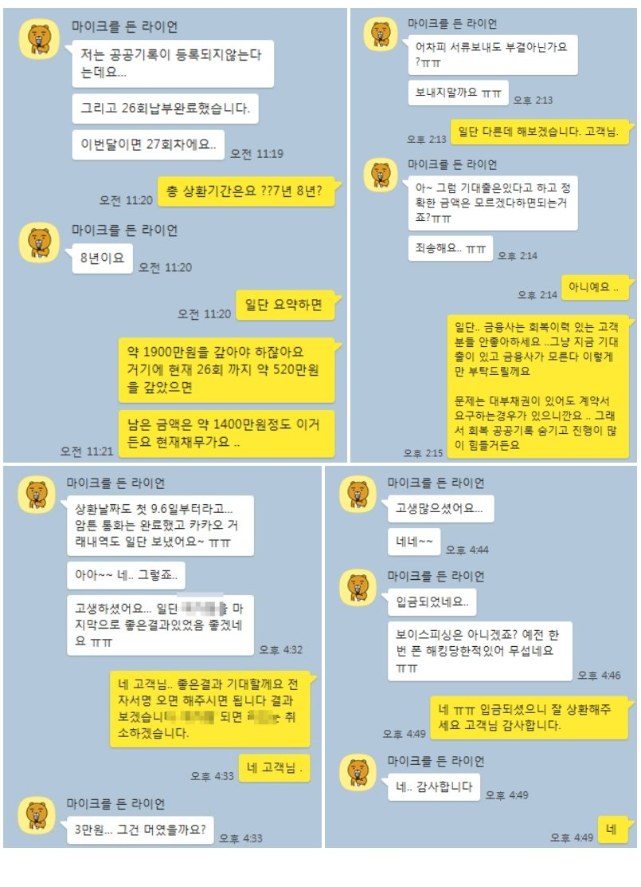

신용회복 공공기록 삭제 여성직장인 1000만원 대출 사례!
안녕하세요 ...뱅크앤론 김한수 상담사 입니다.
오늘은 신용회복 대출 사례를 통해 안내해 드리겠습니다.
고객님께서는 저희 뱅크앤론 문의 하기전 다른 중개업통해서 신용회복 대출 조회를 해본 고객입니다.
금융사는 어디 조회했는지 인지하지 못한채.. 중개업 통해서만 진행해서 어디인지 모른상태에서 상담 문의를 주셨습니다.
고객님 조건으로는 기대출은 2년동안 회복하시면서 없으셨지만 4대보험 미가입자, 신용회복 120회차 26회차 납부 미납0 변제금 변제금 19만원 납부하고 있었습니다.
필요자금은 생활자금 필요해 300~500만원 정도 필요했습니다. 고객님 기본정보 인지 한 후
신분증, 초본, 재직증명서, 급여거래내역서 ,채무변제확인내역서 , 서류 첨부해서 신용회복 조건으로 해서 심사 했지만 모든 금융사가 기거절로 다른중개업통해 다 조회를 해본 것으로 나왔습니다.
고객님의 정보를 파악하고 2년이 지나 공공기록이 삭제된거를 인지하고 신용회복 오픈안하고 진행했습니다.. 그결과 A금융사에서 1000만원 이라는 조건에 진행하게 되었습니다.
한가지 걸리는점은 급여날짜에 신용회복위원회에 변제금 납부한게 3번 찍혀있지만 ..금융사에서 대출이 실행됐습니다.
아래는 저와 고객님과의 카톡내용입니다. 대출 필요하실때 문의주시면 뱅크앤론통해 상담신청 남겨주시면 대출 도움드리겠습니다. 오늘도 행복한 하루 보내시고 이번 한주도 화이팅하겠습니다.^^
